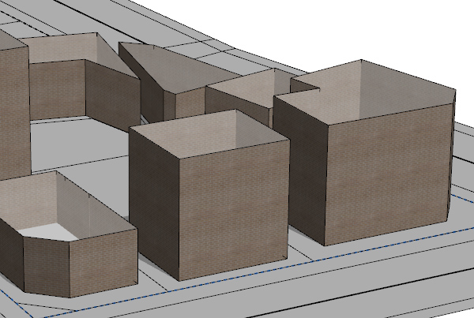

texture operation
Syntax
texture(filePath)
Parameters
- filePath (string)
Name of the texture file to insert. See Asset Search for information about search locations and Built-in Assets for a list of built-in textures. Supported image formats are listed in Texturing Essentials.
Description
The texture operation uses the file specified in filePath to texture the current shape by setting the colormap and, if applicable, the opacitymap attribute. The texture operation is a convenience version of set(material.colormap,..) and (if applicable) set(material.opacitymap,..). The opacitymap attribute is set if the texture contains an alpha channel or is reset to an empty string otherwise.
Note: The texture operation does not create texture coordinates.
Related
- copyUV operation
- deleteUV operation
- normalizeUV operation
- projectUV operation
- rotateUV operation
- scaleUV operation
- setupProjection operation
- translateUV operation
- resetMaterial operation
- setMaterial operation
- material.map attribute
- getMaterial function
Examples
brickMap = "assets/bricks.jpg"
randBuildingHeight = rand(3,20)
Lot -->
s('.75,'1,'.75)
center(xz)
extrude(world.up, randBuildingHeight)
comp(f){side: Facade | top: set(material.color.a, .3) Roof.}
Facade -->
# color, uv set 0
setupProjection(0, scope.xy, 5, 5)
texture(brickMap)
// = set(material.colormap,brickMap)
projectUV(0)

Copyright ©2008-2025 Esri R&D Center Zurich. All rights reserved.